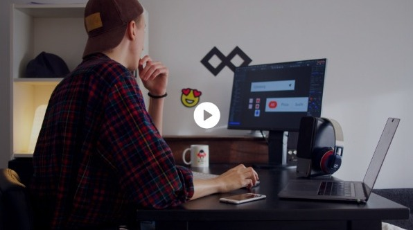

- Menu

A UX/UI designer, product designer,content
creator and creative director.
Of course, there's so much more to me than just a few fancy titles.Scroll down
and get to know me,
Learn all about me in 60 second

User interface design, user
experience design, user research.
Read more
User interface design, user
experience design, user research.
Read more
User interface design, user
experience design, user research.
Read more
But I must explain to you how all this mistaken
idea of denouncing pleasure and praising pain
was born and I will give you a complete
Jared Warner
CEO of zeo
”
⠀Design is not just color it
⠀speaks visually...
Read more
⠀Design is not just color it
⠀speaks visually...
Read more
⠀Design is not just color it
⠀speaks visually...
Read more